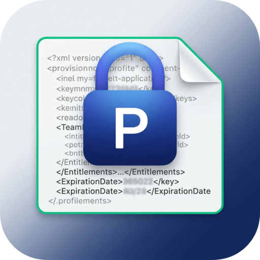
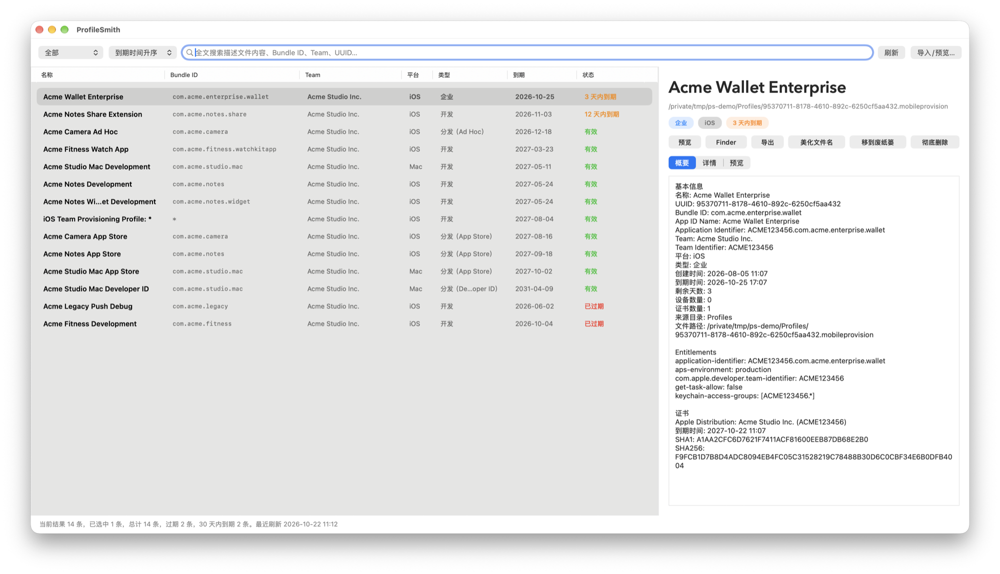

原生 macOS 描述文件管理器。自动索引本机所有 .mobileprovision / .provisionprofile，一眼看清哪些快过期、属于哪个 Team、绑定了哪些证书和 Entitlements。
A native provisioning profile manager for macOS. It indexes every .mobileprovision and .provisionprofile on your Mac and shows at a glance which ones expire soon, which Team they belong to, and which certificates and entitlements they carry.

截图中的描述文件均为演示数据。Profiles in the screenshots are demo data.
覆盖 iOS 开发 / Ad Hoc / App Store / 企业，以及 Mac 开发 / App Store / Developer ID 描述文件。Covers iOS Development, Ad Hoc, App Store and Enterprise profiles, plus Mac Development, App Store and Developer ID.
常用操作都有快捷键。Common actions have keyboard shortcuts.
| 导入描述文件Import profiles | ⌘O |
| 刷新索引Refresh index | ⌘R |
| 预览选中项Preview selection | 空格 / 双击Space / double-click |
| 复制选中行Copy selected rows | ⌘C |
| 移到废纸篓Move to Trash | Delete |
| 偏好设置Settings | ⌘, |
不确定芯片类型？打开「苹果菜单 › 关于本机」，看“芯片”或“处理器”一栏，或在终端执行 uname -m。Not sure which chip you have? Open › About This Mac and check “Chip” or “Processor”, or run uname -m in Terminal.
arm64，Intel 芯片选 x86_64。Download the DMG for your chip: arm64 for Apple silicon, x86_64 for Intel.